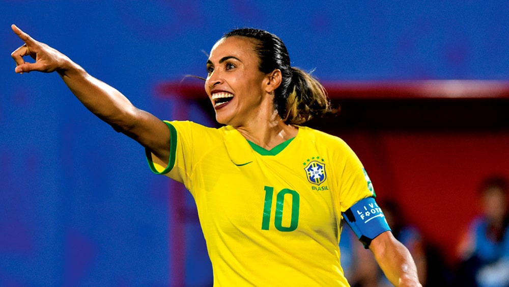
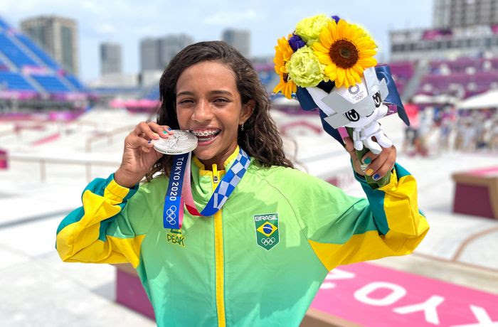

O Brasil tem muitas atletas que fizeram e continuam fazendo história no esporte mundial. Conheça algumas delas:

Marta é considerada a maior jogadora de futebol de todos os tempos. Ela foi eleita seis vezes a melhor jogadora do mundo pela FIFA, um recorde absoluto. Nascida em Dois Riachos, Alagoas, Marta superou muitas dificuldades para chegar ao topo do futebol.

Conhecida como a fadinha, Rayssa Leal ganhou a medalha de prata no skate nas Olimpíadas de Tóquio 2020 com apenas 13 anos de idade. Ela se tornou a atleta brasileira mais jovem a conquistar uma medalha olímpica. Nas Olimpíadas de Paris 2024 ela conquistou o bronze.
Rebeca Andrade é uma das maiores ginastas da história do Brasil. Nas Olimpíadas de Tóquio 2020, ela conquistou ouro no salto e prata no individual geral. Já em Paris 2024, Rebeca se tornou a maior medalhista olímpica do Brasil, mostrando que a dedicação e o esforço sempre valem a pena.
Além dessas, muitas outras mulheres brasileiras merecem reconhecimento: